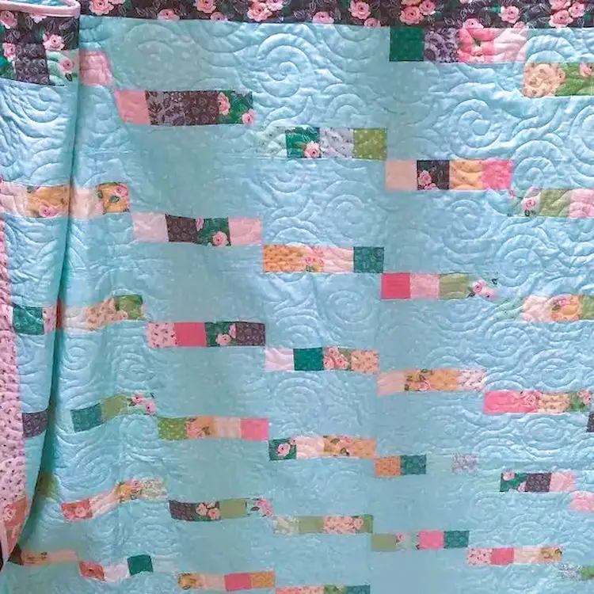

Home


About Me
I began my quilting journey in 1993, inspired by my twin aunts who had been freehand quilting for 30 years. Their beautiful
quilts captivated me, and I was eager to learn. Despite my persistent requests for lessons, their advice was always the same:
"Just take a class."
My first project was a housedress pattern quilt. Although challenging for a beginner, I persevered and completed it after a
year. I entered it in the Salt Lake County Fair and won 2nd place in the amateur division. This achievement encouraged me to
continue quilting.
Over the years, I have created numerous quilts and table runners, many of which have been entered in the Fair. I have also made
quilts for family, friends, and neighbors, providing warmth and love to those who receive them.
Quilting has become a cherished part of my life, and I enjoy creating quilts for different holidays and occasions. My motto is
that a perfect quilt is a finished quilt, whether quilted by hand or machine.

Happy Quilting!